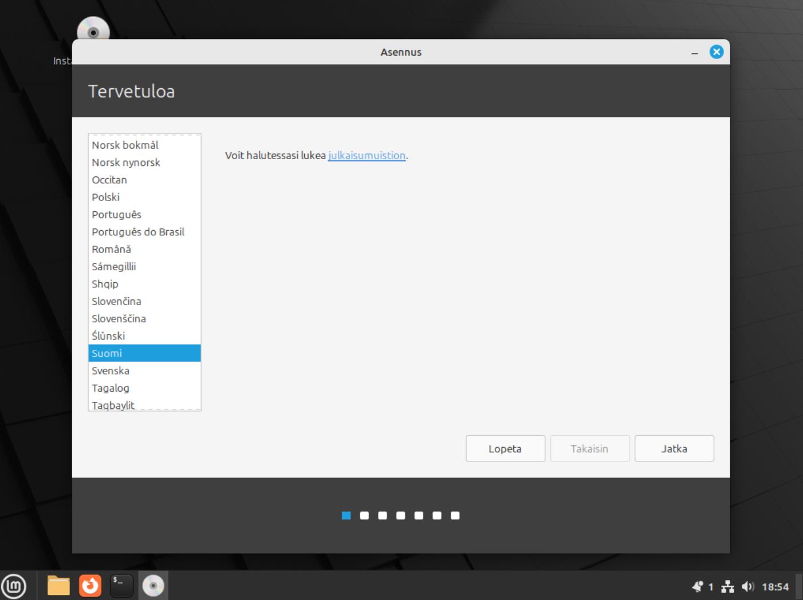
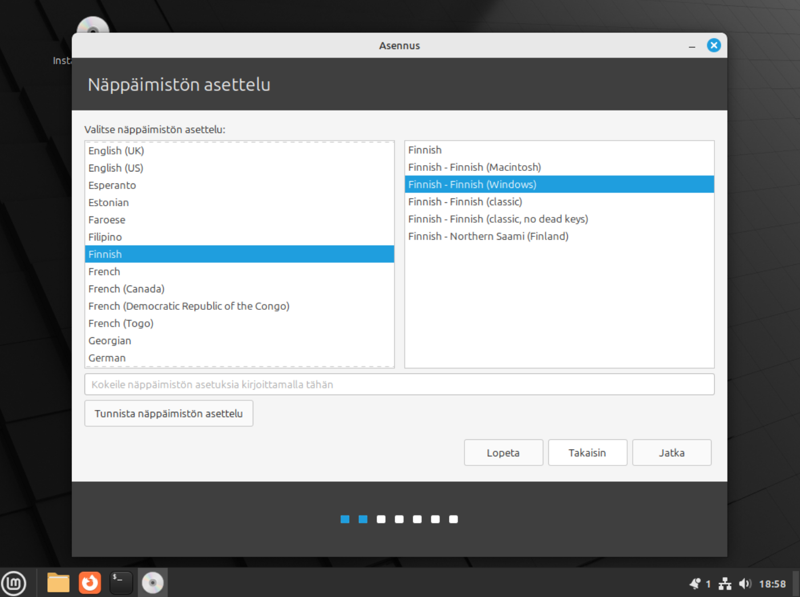
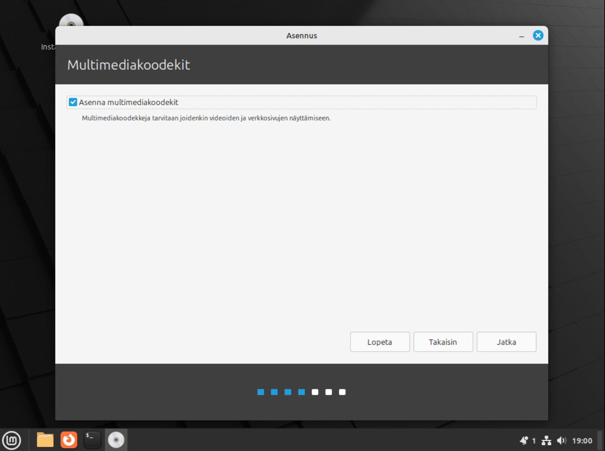
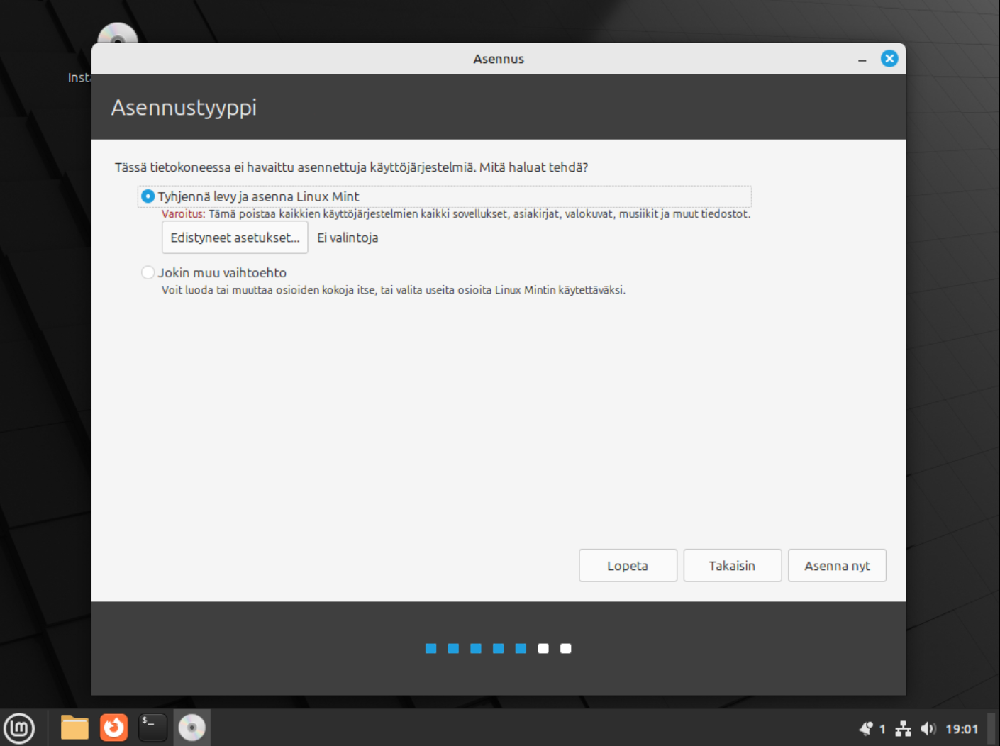
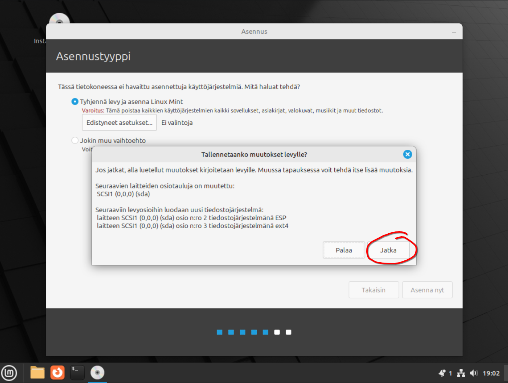
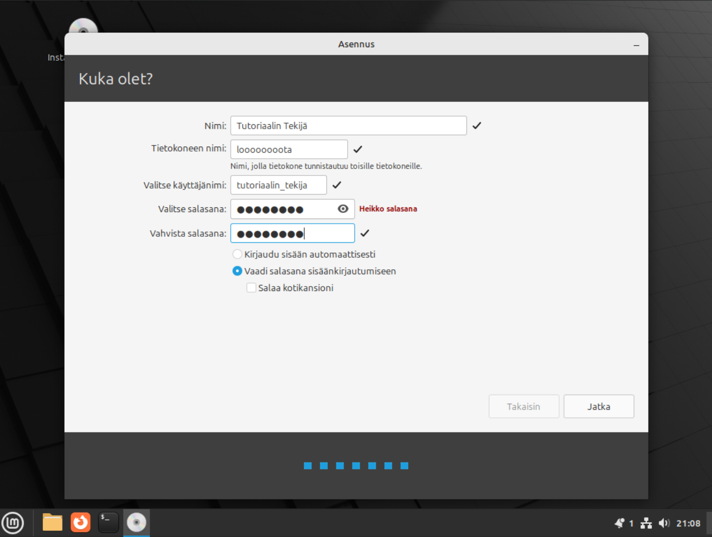

Windows 10stä linuxiin helposti
Tässä olisi helppo ohje windows 10 (tai 7, vistan, xpn jne.) vaihtamisesta linuxiin. Kaikkihan varmaan jo
tietävät että ensi vuonna koittaa windows 10 eol jonka johdosta windows 10 ei saa enään tietoturvapäivityksiä,
jolloin sen käyttö on yhtä turvallista kuin kahvinkeitto liekinheittimellä.
Microsoft tarjoaa ilmaisen
päivityksen Windows 11, mutta laitteistovaatimukset ovat hurjat.
Distron valinta
Linuxista on todella paljon distroja, joissa kaikissa on hieman eri ohjelmat kernelin päälle rakennettu.
Aloittelevalle käyttäjälle suosittelen tyyliin Linux Mintiä tai muuta helppoa distroa. Itse henkilökohtaisesti
käytän Fedoraa mutta se voi olla haastelllinen aloittelijalle.
Tässä käsittelemäni asiat pätevät lähestulkoon kaikkiin distroihin.
Sen lataaminen
No ensimmäinen asia on tietenkin sen lataaminen ja laitan alle latauslinkit muutamaan distroon:
Helppoja
(suosittelen)
Linux Mint
Keskitaso
Debian
Fedora
Sen laittaminen usb tikulle tai dvd levylle
Sitten olisi aika laittaa se ladattu .iso tiedosto levylle. Dvd levyillä voi vain painaa hiiren oikeata ja valita
polta levylle
Sitten siihen usb-tikkuun: suosittelen laittamaan sen sille usb tikulle käyttäen Fedora media writeria sen helppouden
vuoksi.
Lataa Windows versio ja asenna se. Kun olet saanut sen tehtyä, paina "valitse .iso tiedosto" ja etsi se
tiedosto jonka latasit. Sitten vain valitset oikean usb-tikun ja painat kirjoita.
Sen asentaminen
Ennen kuin aloitat asennusta muista varmuuskopioida kaikki data tietokoneelta (asennusohjelma tulee poistamaan
kaiken levyltä).
Myös ns. Dual boot on mahdollinen jossa käytetään kumpaakin käyttistä mutta se onkin jo vähän
hankalampi ja tulen käsittelemään sen varmaan myöhemmin.
Tietokoneen käynnistäminen usb-tikulta tai dvdltä
Sammuta tietokone (dvd levy sisällä tai usb-tikku kiinni) ja sitten voidaan siirtyä asennukseen.
Käynnistä
tietokone ja katso mitä nappia se käskee painaa kun se käynnistyy.
Sitten kun olet painanut sitä nappia olet
päässyt biosiin josta sinun täytyy etsiä "boot" kohta ja käynnistää usb-tikulta/dvdltä. Voit vaikka väliaikaisesti
muuttaa bootti järjestystä. Asusken koneissa on yleensä sellainen kohta etusivulla josta voi hiirellä siirtää
levyjä eri järjestykseen.
Jos sait sen nyt boottaamaan suoraan asennusohjelmaan skippaa seuraavaan
kohtaan.
Jos ei niin tallenna biosin asetukset ja käynnistä tietokone uudelleen niin sen pitäisi käynnistyä
asennusohjelmaan.
Asentaminen
No niin sitten siirrytään asentamaan ja teen tämän vain linux mintille. (jos tahdot ohjeen jollekkin toiselle
niin kerro se minulle! Discordiin voi laittaa palautetta ja ideoita.)
Käynnismisessä saattaa mennäå kauan ja
odota että näät tämän ruudun ja sitten paina "install linux mint" nappia
Sitten valitse listasta Suomi ja paina seuraava.
 valitaan näppäimmistö ja kuvassa näkyy oikeat valinnat joten en laita sen enempää tekstiä
näissä.

  
Sitten on sijaiti mikä
pitää
itte
tietää (aikavyöhykettä varten).

Sitten vaan laitat
käyttäjänimen
ja salasanan ja nimen tietokoneelle (älä kopio noita). Asennus on nyt lähes valmis ja anna sen vain olla ja
odottele että se pyytää poistamaan usb-tikun tai dvdn ja sitten se käynnistyy uudelleen.
Se on nyt valmis.